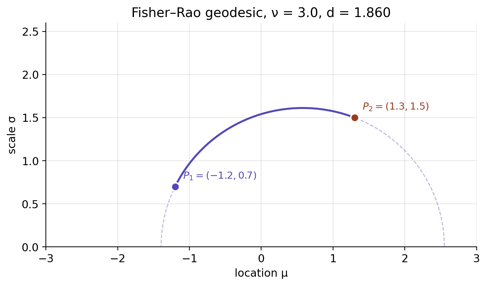
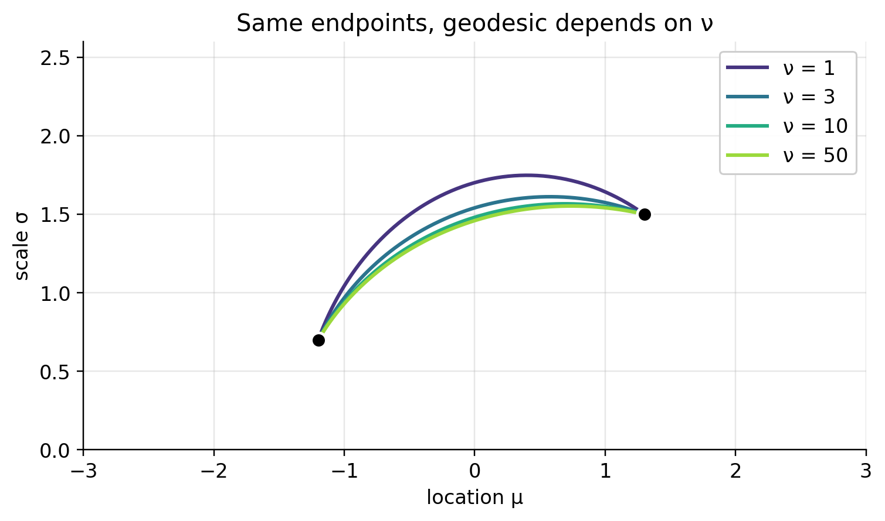
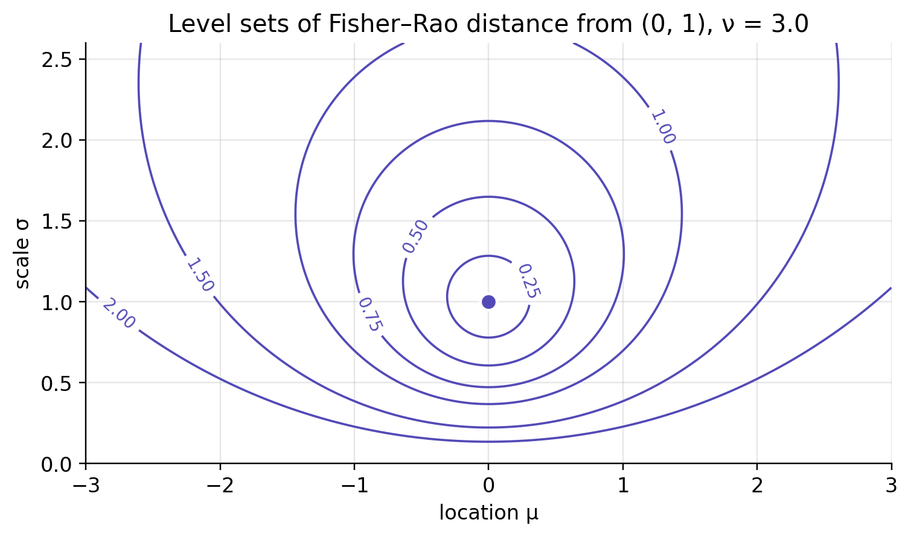
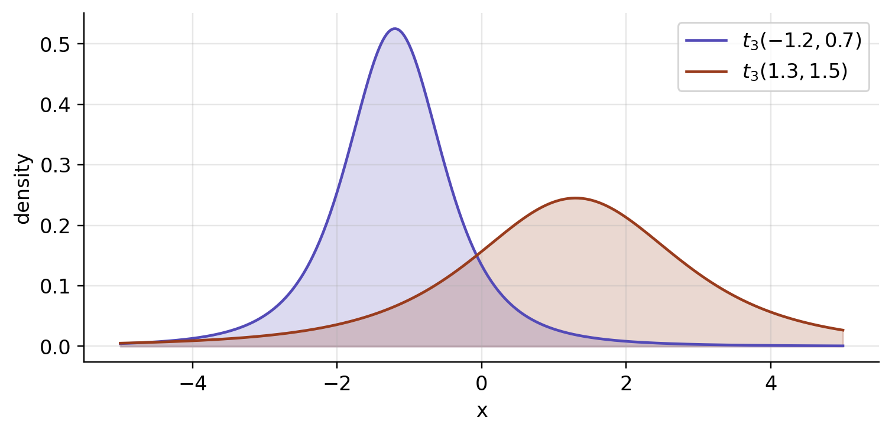
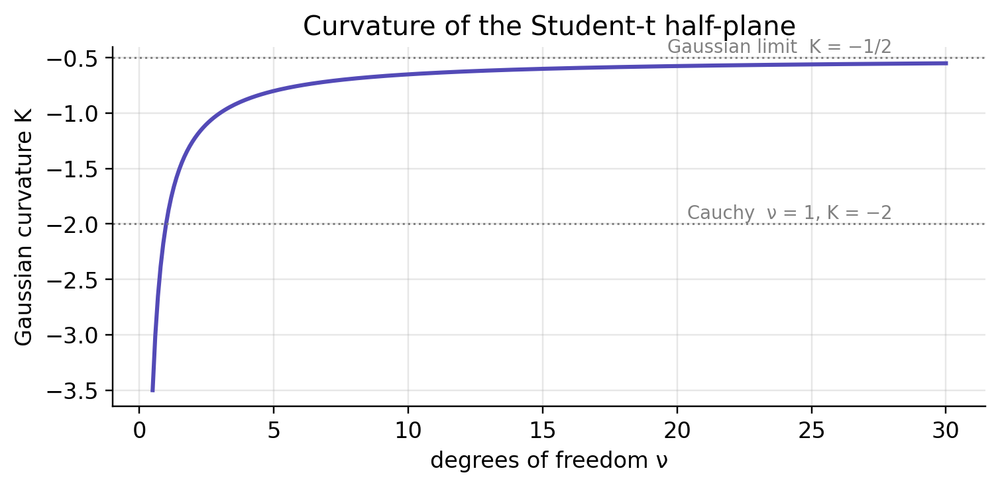
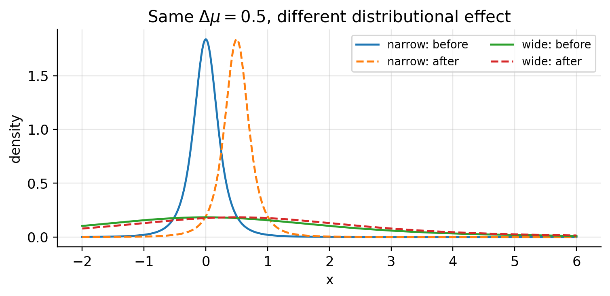
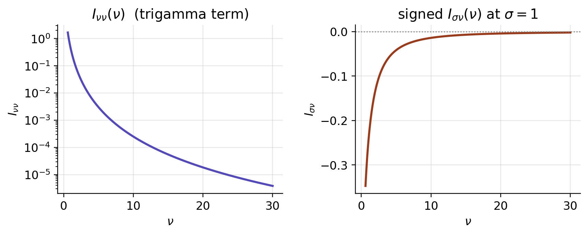
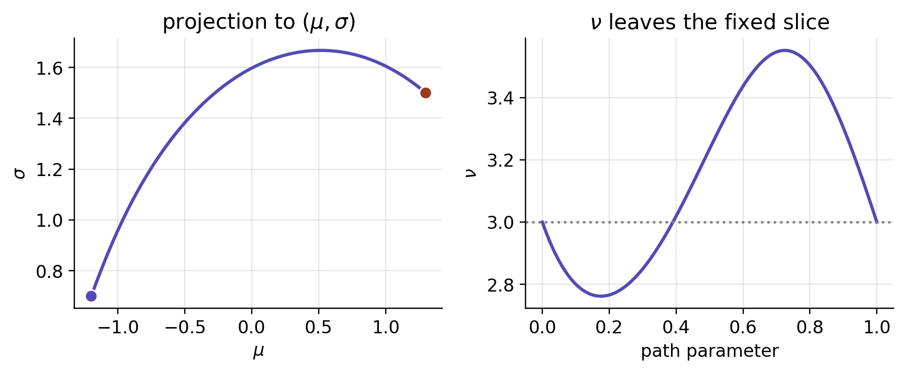
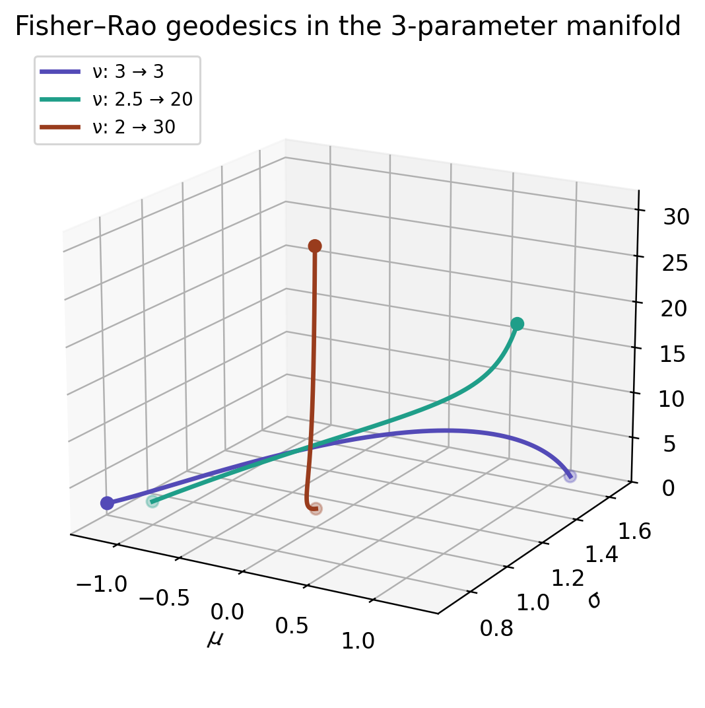

2026-06-06
We usually index a Student-t distribution by a location \mu, a scale \sigma, and degrees of freedom \nu. Those coordinates are convenient, but they don’t really measure anything on their own. A shift of 0.5 does very different work for a narrow distribution than for a wide one, and adding a unit of scale is not the same operation at \sigma=1 as it is at \sigma=10.
What we’d like instead is a ruler that comes from the distributions themselves, one that calls two parameter values close when their densities are hard to tell apart and far when they’re easy to tell apart. The Fisher–Rao metric is exactly that ruler. For fixed \nu it hands the Student-t location–scale family a clean answer — a rescaled Poincaré half-plane — and most of this note lives in that case. The clean picture stops being the whole story the moment \nu is allowed to move, and that is where the note ends up.
Coordinate distance measures the wrong thing. It tells you how far apart two parameter values sit in the chart (\mu,\sigma,\nu), which is not the same as how far apart the corresponding distributions are.
The Fisher information metric g_{ij}(\theta)=\mathbb{E}_\theta[\partial_i\log f\,\partial_j\log f] fixes this, because it is the quadratic term in the local KL divergence: D_{\mathrm{KL}}(p_\theta\|p_{\theta+d\theta}) =\frac12 g_{ij}(\theta)d\theta^i d\theta^j+O(\|d\theta\|^3). Read that way, the metric records which small parameter moves are actually visible at the level of the probability laws and quietly discounts the ones that aren’t. For fixed degrees of freedom it takes a pleasantly simple form — it turns out to be hyperbolic — and the next few sections work that out before I circle back to what breaks if you ignore it.
Let g be a symmetric, smooth probability density on \mathbb{R}, and form the location–scale family f(x;\mu,\sigma) = \frac{1}{\sigma}\,g\!\left(\frac{x-\mu}{\sigma}\right), \qquad \sigma > 0.
Writing \ell = \log f and z = (x-\mu)/\sigma, one has \partial_\mu \ell = -\sigma^{-1} (g'/g)(z) and \partial_\sigma \ell = -\sigma^{-1}\,(1 + z\,(g'/g)(z)).
Symmetry of g kills the cross-term, so the Fisher matrix comes out diagonal: I_{\mu\mu}(\mu,\sigma) = \frac{A}{\sigma^2},\qquad I_{\sigma\sigma}(\mu,\sigma) = \frac{B}{\sigma^2}, with constants A = \int (g'/g)^2 \, g\,dz,\qquad B = \int (1 + z\,g'/g)^2 \, g\,dz.
Since A and B depend only on the shape g and not on \mu or \sigma, the Fisher–Rao line element on the upper half-plane is \boxed{\;ds^2 = \frac{A\,d\mu^2 + B\,d\sigma^2}{\sigma^2}\;}
That is a Poincaré-type metric for any reasonably regular symmetric location–scale family whose Fisher constants A and B are finite. The Gaussian gives A=1, B=2; next we work out the constants for the Student-t.
For the Student-t with \nu degrees of freedom, g(z) \propto \left(1 + \tfrac{z^2}{\nu}\right)^{-(\nu+1)/2}, \qquad \frac{g'(z)}{g(z)} = -\frac{(\nu+1)\,z}{\nu + z^2}.
Both integrals are standard — substitute z = \sqrt{\nu}\,\tan\theta and lean on the beta-function identities — and they give A = \frac{\nu+1}{\nu+3},\qquad B = \frac{2\nu}{\nu+3}.
So the Fisher–Rao line element is ds^2 \;=\; \frac{1}{\nu+3}\cdot\frac{(\nu+1)\,d\mu^2 + 2\nu\,d\sigma^2}{\sigma^2}.
As \nu\to\infty this recovers the Gaussian metric (d\mu^2 + 2\,d\sigma^2)/\sigma^2, and \nu=1 is the Cauchy case.
Substitute \tilde\mu = (a/b)\,\mu with a=\sqrt{A}, b=\sqrt{B}. Then ds^2 = b^2 \cdot \frac{d\tilde\mu^2 + d\sigma^2}{\sigma^2}, which is b^2 times the standard Poincaré metric on the upper half-plane. That metric has Gaussian curvature -1, and multiplying a metric by b^2 scales its curvature by 1/b^2, so \boxed{\;K_\nu = -\frac{1}{b^2} = -\frac{\nu+3}{2\nu}\;}
The limiting cases:
In the rescaled coordinate (\tilde\mu, \sigma) we are back to the standard Poincaré metric, whose geodesics everyone knows:
Pulling these back through \mu = (b/a)\,\tilde\mu stretches them horizontally by b/a = \sqrt{2\nu/(\nu+1)}. In the original (\mu,\sigma) coordinates, then, a non-vertical geodesic is half of an ellipse centred on the line \sigma=0, with horizontal semi-axis b/a times the vertical one. The aspect ratio depends only on \nu:
| \nu | b/a | shape |
|---|---|---|
| 1 (Cauchy) | 1 | circle |
| 3 | \sqrt{3/2} \approx 1.22 | slightly stretched |
| \infty (Gaussian) | \sqrt{2} \approx 1.41 | ellipse |
The standard Poincaré distance on (\tilde\mu, \sigma) is d_P(P_1,P_2) = \operatorname{arccosh}(1 + \Delta) with \Delta = \tfrac{(\tilde\mu_1-\tilde\mu_2)^2 + (\sigma_1-\sigma_2)^2}{2\sigma_1\sigma_2}. Scaling the metric by b^2 scales distances by b, and undoing \tilde\mu = (a/b)\mu gives (\tilde\mu_1-\tilde\mu_2)^2 = (\nu+1)/(2\nu)\cdot (\mu_1-\mu_2)^2. Put together, \boxed{\; d_{\mathrm{FR}}\bigl(t_\nu(\mu_1,\sigma_1),\,t_\nu(\mu_2,\sigma_2)\bigr) =\sqrt{\tfrac{2\nu}{\nu+3}}\; \operatorname{arccosh}\!\left(1 + \frac{\tfrac{\nu+1}{2\nu}(\mu_1-\mu_2)^2 + (\sigma_1-\sigma_2)^2}{2\sigma_1\sigma_2}\right). \;}
In the Gaussian limit (\nu\to\infty) this collapses to the classical Atkinson–Mitchell formula d_{\mathrm{FR}} = \sqrt{2}\,\operatorname{arccosh}(1 + (\Delta\mu^2/2 + \Delta\sigma^2)/(2\sigma_1\sigma_2)).
The closed form earns its keep by telling us how to read the pictures that follow. A straight line in the chart is usually not the shortest statistical path; an equal-distance set is not a Euclidean circle; and any change in \mu gets divided by \sigma before it counts for anything.
Take two distributions, P_1=t_3(-1.2,0.7) and P_2=t_3(1.3,1.5). The shortest Fisher–Rao path between them is not the straight segment joining their coordinates — it bows upward, because travelling close to small \sigma is expensive.

Hold the endpoints fixed and vary \nu, and what changes is the horizontal stretch of the hyperbolic half-plane. Heavy Cauchy-like tails give one shape; the Gaussian limit gives another.

A Fisher–Rao ball gathers the distributions at equal information distance from the centre. Drawn in the (\mu,\sigma) chart, these balls sit higher than you’d expect and curl away from \sigma=0. That boundary is infinitely far off, which is why a tiny Euclidean step near zero scale can amount to a large statistical move.

The points in the half-plane are only a compact shorthand for densities. Here are the two distributions behind the points in the geodesic picture above.


None of this matters unless the geometry actually flips an answer somewhere, so here are a handful of cases where Euclidean distance in (\mu,\sigma) ranks distributional changes the wrong way round.
To keep the comparison honest I’ll also report total variation as a check at the level of probabilities: \operatorname{TV}(P,Q)=\frac12\int |p(x)-q(x)|\,dx. With equal class priors, the best possible binary classifier telling P from Q has accuracy \operatorname{Acc}^*(P,Q)=\frac{1+\operatorname{TV}(P,Q)}{2}. So a small TV means even the optimal classifier is barely better than guessing, and that gives the numbers in the tables below something tangible to mean.
Shift the location by the same raw amount, \Delta\mu=0.5, once for a narrow t_3 distribution and once for a wide one:
| Comparison | Euclidean | Fisher–Rao | TV | Bayes accuracy |
|---|---|---|---|---|
| t_3(0,0.2) vs t_3(0.5,0.2) | 0.5000 | 1.7918 | 0.7001 | 0.8500 |
| t_3(0,2) vs t_3(0.5,2) | 0.5000 | 0.2038 | 0.0916 | 0.5458 |
By the Euclidean reckoning these are the same move. As distributions they are nothing alike: the narrow pair is easy to separate, while the same shift barely disturbs the wide pair. The d\mu^2/\sigma^2 term in the metric is precisely this effect — a location error only means something relative to the scale it sits on.

A starker failure. Pair A moves only 0.1 in raw location; pair B moves a full 5. By Euclidean distance B wins easily. But A is extremely narrow and B is very wide, so once you look at the distributions the verdict flips.
| Comparison | Euclidean | Fisher–Rao | TV | Bayes accuracy |
|---|---|---|---|---|
| A: t_3(0,0.05) vs t_3(0.1,0.05) | 0.1000 | 1.4910 | 0.6090 | 0.8045 |
| B: t_3(0,10) vs t_3(5,10) | 5.0000 | 0.4055 | 0.1813 | 0.5906 |
Euclidean distance is answering the coordinate question correctly and the statistical question wrongly: it ranks the raw 5-unit move as the larger one, whereas Fisher–Rao distance, TV distance, and optimal classification accuracy all agree that the tiny 0.1 move at small scale is the bigger change in distribution.
Euclidean geometry misreads scale too. In Fisher–Rao geometry, stretching \sigma to 2\sigma costs the same information distance wherever you start, since along a vertical geodesic d_{\mathrm{FR}}\bigl(t_\nu(\mu,\sigma),t_\nu(\mu,c\sigma)\bigr) = \sqrt{\frac{2\nu}{\nu+3}}\,|\log c|. At \nu=3 the prefactor is one, so the distance is just |\log c|.
| Comparison | Euclidean | Fisher–Rao | TV | Bayes accuracy |
|---|---|---|---|---|
| doubling: t_3(0,1) vs t_3(0,2) | 1.0000 | 0.6931 | 0.2783 | 0.6392 |
| doubling: t_3(0,10) vs t_3(0,20) | 10.0000 | 0.6931 | 0.2783 | 0.6392 |
| add one: t_3(0,10) vs t_3(0,11) | 1.0000 | 0.0953 | 0.0394 | 0.5197 |
Euclidean geometry puts the two doublings at distances 1 and 10; the statistical geometry calls them the very same change. Going the other way, adding one unit of scale at \sigma=10 is almost invisible next to doubling from 1 to 2, even though both have a raw scale increment of 1.
For a last example, take a query distribution Q=t_3(0,1) and two candidate prototypes A=t_3(0.2,0.05),\qquad B=t_3(0.1,2). Which one is closer to Q?
| Comparison | Euclidean | Fisher–Rao | TV | Bayes accuracy |
|---|---|---|---|---|
| Q vs A=t_3(0.2,0.05) | 0.9708 | 3.0221 | 0.8368 | 0.9184 |
| Q vs B=t_3(0.1,2) | 1.0050 | 0.6954 | 0.2792 | 0.6396 |
A nearest-neighbour rule on Euclidean distance picks A, since (0.2,0.05) is marginally closer to (0,1) in raw coordinates than (0.1,2) is. As distributions, though, A is the far one — a narrow spike — while B is just a moderate change of scale. Fisher–Rao, TV, and Bayes accuracy all prefer B.
That, more than the tidy formula, is why one bothers with the Poincaré metric. It keeps nearest-neighbour search, clustering, interpolation, and model comparison from mistaking proximity in coordinates for proximity in distribution.
Before promoting \nu to a coordinate, it’s worth checking the fixed-slice formulas against direct numerical integration — mostly to catch the sign and scaling slips that are easy to make here.
The direct numerical checks agree with the closed forms to numerical precision.
| ν | A, numerical | A, closed form | B, numerical | B, closed form |
|---|---|---|---|---|
| 1 | 0.500000 | 0.500000 | 0.500000 | 0.500000 |
| 3 | 0.666667 | 0.666667 | 1.000000 | 1.000000 |
| 10 | 0.846154 | 0.846154 | 1.538462 | 1.538462 |
| 50 | 0.962264 | 0.962264 | 1.886792 | 1.886792 |
| ν | geodesic arc length | closed-form distance | absolute difference |
|---|---|---|---|
| 1 | 1.508537 | 1.508537 | 4.6e-10 |
| 3 | 1.859740 | 1.859740 | 3.4e-10 |
| 10 | 2.160554 | 2.160554 | 3.3e-10 |
| 50 | 2.332169 | 2.332169 | 3.4e-10 |
Density normalization check over [-100,100]: 0.999999.
The Poincaré result is a fixed-\nu statement. Let \nu vary and the model becomes the three-dimensional manifold \mathcal M=\{t_\nu(\mu,\sigma):\mu\in\mathbb R,\ \sigma>0,\ \nu>0\}. Now the Fisher matrix carries a genuine shape direction. The location coordinate still decouples by symmetry, but \sigma and \nu no longer do, and the fixed-slice constant-curvature half-plane stops being the whole geometry.
Symmetry of the standardized density keeps \mu decoupled: I_{\mu\sigma}=I_{\mu\nu}=0. The fixed-\nu block is still sitting in the upper-left corner. What’s new is the signed coupling between scale and tail thickness: \boxed{\; I(\mu,\sigma,\nu)= \begin{pmatrix} \dfrac{\nu+1}{(\nu+3)\,\sigma^2} & 0 & 0 \\[1.1em] 0 & \dfrac{2\nu}{(\nu+3)\,\sigma^2} & -\dfrac{2}{\sigma(\nu+1)(\nu+3)} \\[1.1em] 0 & -\dfrac{2}{\sigma(\nu+1)(\nu+3)} & I_{\nu\nu}(\nu) \end{pmatrix} \;} I_{\nu\nu}(\nu)=\tfrac14\!\left[\psi'\!\left(\tfrac{\nu}{2}\right)-\psi'\!\left(\tfrac{\nu+1}{2}\right)\right] -\frac{\nu+5}{2\nu(\nu+1)(\nu+3)}.
That trigamma term is exactly what stops the metric from staying a nice rational form. The sign of the cross term also matters: with the usual scale coordinate \sigma we have \partial_\sigma\log f=-(1+z\,\partial_z\log g_\nu(z))/\sigma, which makes the (\sigma,\nu) entry negative. Both new entries are confirmed below by direct integration of the signed score products.
| ν | Iσν, numerical | Iσν, closed form | Iνν, numerical | Iνν, closed form |
|---|---|---|---|---|
| 3 | -0.083333 | -0.083333 | 0.016911 | 0.016911 |
| 10 | -0.013986 | -0.013986 | 0.000250 | 0.000250 |
| 30 | -0.001955 | -0.001955 | 0.000004 | 0.000004 |

Both new entries die off as \nu\to\infty (I_{\sigma\nu}\to0, and in fact I_{\nu\nu}=O(\nu^{-4})): the shape direction decouples and the Gaussian half-plane re-emerges as the limiting location-scale geometry.
Below I assemble the metric, its analytic derivatives (the \nu-derivative of I_{\nu\nu} drags in the tetragamma \psi''), and the Christoffel symbols \Gamma^i_{jk}=\tfrac12 g^{im}(\partial_j g_{ml}+\partial_l g_{mj}-\partial_m g_{jl}). Geodesics solve \ddot\theta^{\,i}+\Gamma^i_{jk}\dot\theta^{\,j}\dot\theta^{\,k}=0, and to find the one between two prescribed distributions I solve the boundary-value problem and then measure its metric arc length.
Treat what follows as a transparent numerical check rather than a production geodesic solver. The boundary-value problem is solved directly in (\mu,\sigma,\nu), so the examples keep an eye on whether the path stays inside the domain \sigma>0,\nu>0; anything more robust would work in (\mu,\log\sigma,\log\nu) or impose the domain constraints explicitly.
Take two distributions sharing the same degrees of freedom, P_1 = t_3(-1.2, 0.7) and P_2 = t_3(1.3, 1.5). Pinned to the \nu=3 slice, the geodesic between them has length about 1.860. In the full three-parameter manifold that same curve is still a legal path — it just need not be the shortest one. With the cross-term sign handled correctly the effect turns out mild, far milder than the earlier unsigned calculation suggested: the optimal path dips out of the slice only a little, \nu wandering between roughly 2.76 and 3.55, and the length drops only slightly, to about 1.852.
That is the honest reading. Freeing \nu can shorten the path, but how far it moves and in which direction depends on the endpoints. There is no generic plunge toward Cauchy tails.
At the first endpoint, Γνμμ = 5.688 and Γνσσ = -17.063. These nonzero normal components show that the fixed-ν slice is not totally geodesic.
| quantity | value |
|---|---|
| full three-parameter geodesic length, L3D | 1.85176 |
| fixed-ν in-slice distance, dν=3 | 1.85974 |
| ν range along the full geodesic | [2.7618, 3.5517] |


| case | geodesic length | ν range |
|---|---|---|
| ν: 3 → 3 | 1.85176 | [2.76, 3.55] |
| ν: 2.5 → 20 | 1.54804 | [2.50, 20.00] |
| ν: 2 → 30 | 0.59907 | [2.00, 30.00] |
When the two endpoints sit in the same fixed-\nu slice, the fixed-\nu distance is a constrained distance, and so it can only be an upper bound on the true three-parameter Fisher–Rao distance. Here the bound is tight: freeing \nu buys a small shortcut, not a dramatic heavy-tail detour. The two distances coincide only when \nu is genuinely pinned down as a modelling constraint.
| Quantity | Fixed \nu | Free \nu |
|---|---|---|
| Manifold dimension | 2 | 3 |
| Curvature | constant -(\nu+3)/(2\nu) on each fixed slice | not captured by one fixed-slice constant-curvature model |
| Metric form | rational in \nu | trigamma \psi' in I_{\nu\nu} |
| Geodesics | half-ellipses (closed form) | numerical (BVP) |
| Distance | closed form (§6) | numerical; §6 is an upper bound when endpoints lie in one fixed-\nu slice |
| Same-\nu shortest path | constrained to stay in slice | may leave the slice; in the example only mildly |
@misc{miryusupov2026studentt,
author = {Miryusupov, Shohruh},
title = {Student-t Fisher Geometry and the Poincaré Half-Plane},
year = {2026},
howpublished = {Research note},
url = {https://www.miryusupov.com/blog/posts/student_t_poincare_wrong_answers},
}